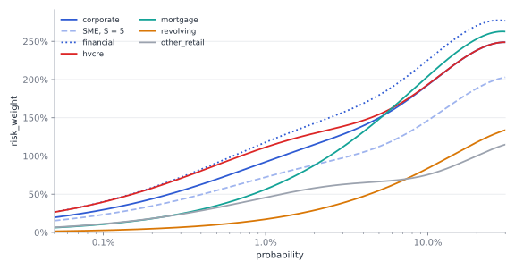

监管资本#
采用内部评级法（IRB）的银行，根据自己对每笔敞口的违约概率（PD）、违约损失率（LGD）、违约风险敞口（EAD）和期限的估计来确定信用风险的资本要求。资本覆盖非预期损失：千年一遇的坏年份中的损失，减去定价和拨备已经覆盖的预期损失。把这些估计转换为资本要求的风险权重函数，由巴塞尔框架以及中国 2023 年资本规则等各国规则规定，两者都以 Vasicek 的单因子模型为基础。
PD 来自 校准 的主标尺，并在上一篇指南 模型验证 中接受审查；资本不包含的预期损失见 信贷策略 。下一篇指南 Vintage 与滚动率分析 跟踪贷款本身， 存续期 PD 与预期信用损失 则用同样的 PD 计算 IFRS 9 的损失准备。 asset_correlation() 给出每个资产类别的资产相关系数， capital_requirement() 给出资本要求。 conditional_pd() 给出单因子模型在某个经济情景下的 PD， systematic_factor() 给出观察到的违约率所对应的经济状态， vasicek_fit() 由违约率序列估计长期 PD 和相关系数。 most_prudent_pd() 给出违约太少、无法校准的组合的 PD 上界。
定义#
在单因子模型中，借款人的资产为 \(\sqrt{\rho}\,Z + \sqrt{1 - \rho}\,\varepsilon\) ，其中 \(Z\) 是所有借款人共享的系统因子， \(\varepsilon\) 是特质因子，两者都服从标准正态分布， \(\rho\) 是资产相关系数。资产低于 \(\Phi^{-1}(\mathrm{PD})\) 时借款人违约，其中 \(\Phi\) 是标准正态分布函数。给定因子 \(z\) ，违约相互独立，按条件 PD 发生：
正的 \(z\) 表示经济好于平均。在大型组合中违约率等于条件 PD，因此经济在 \(q\) 分位数处的损失就是 \(z = -\Phi^{-1}(q)\) 时的损失。内部评级法取 \(q = 0.999\) ，把资本要求 \(K\) （以占 EAD 的比例表示）定为该损失减去预期损失：
资产相关系数 \(R\) 取决于资产类别；公司敞口的相关系数随 PD 上升从 0.24 降到 0.12：
最后一个因子是期限调整， \(M\) 是以年计的有效期限；零售敞口没有期限调整。风险加权资产为 \(\mathrm{RWA} = 12.5\,K\,\mathrm{EAD}\) ， \(12.5\,K\) 是风险权重：8% 的资本充足率乘以 RWA 又得到 \(K\,\mathrm{EAD}\) 。
计算示例#
一笔公司贷款，PD 为 1%，LGD 为 45%，有效期限为 2.5 年：
>>> from kivi.capital import asset_correlation, capital_requirement, conditional_pd
>>> r = asset_correlation(0.01, asset_class="corporate")
>>> stressed = conditional_pd(0.01, correlation=r, level=0.999)
>>> k = capital_requirement(0.01, 0.45, asset_class="corporate")
>>> print(f"R = {r:.6f}, stressed PD = {stressed:.4%}, K = {k:.6f}, risk weight = {12.5 * k:.2%}")
R = 0.192784, stressed PD = 14.0273%, K = 0.073853, risk weight = 92.32%
由 \(w = (1 - e^{-0.5}) / (1 - e^{-50}) = 0.3935\) ，相关系数为 0.12 × 0.3935 + 0.24 × 0.6065 = 0.1928。在千年一遇的最坏年份中，这类贷款有 14.03% 违约，而不是 1%，因此超出预期的损失为 EAD 的 0.45 × (0.1403 − 0.01) = 0.0586。期限为 2.5 年时，期限调整为 \(1 / (1 - 1.5\,b) = 1.2598\) ，其中 \(b = 0.1375\) ，由此得到 K = 0.0739 和 92.32% 的风险权重，即巴塞尔 II 附件 5 中的数值。1,000,000 的敞口对应 923,168 的 RWA，需要 73,853 的资本。
资产类别#
参数 asset_class 选择相关系数，并决定是否做期限调整：
"corporate"：公司、主权和银行敞口，使用上面的相关系数并做期限调整。turnover使中小企业的相关系数最多降低 0.04，financial=True对大型或无监管的金融机构把它乘以 1.25。"hvcre"：高波动商业房地产，用 0.30 代替 0.24，并做期限调整。"mortgage"：个人住房抵押贷款， \(R = 0.15\) 。"revolving"：合格循环零售敞口，例如信用卡， \(R = 0.04\) 。"other_retail"：其他零售敞口，权重为 \(e^{-35\,\mathrm{PD}}\) ，界限用 0.03 和 0.16 代替 0.12 和 0.24。
在 PD 为 1%、LGD 为 45% 时，各类别之间相差可达七倍：
>>> import pandas as pd
>>> classes = {
... "corporate": {"asset_class": "corporate"},
... "SME, S = 5": {"asset_class": "corporate", "turnover": 5.0},
... "financial": {"asset_class": "corporate", "financial": True},
... "hvcre": {"asset_class": "hvcre"},
... "mortgage": {"asset_class": "mortgage"},
... "revolving": {"asset_class": "revolving"},
... "other_retail": {"asset_class": "other_retail"},
... }
>>> weights = pd.DataFrame(
... {
... name: {
... "correlation": asset_correlation(0.01, **options),
... "risk_weight": 12.5 * capital_requirement(0.01, 0.45, **options),
... }
... for name, options in classes.items()
... }
... ).T
>>> weights.round(4)
correlation risk_weight
corporate 0.1928 0.9232
SME, S = 5 0.1528 0.7239
financial 0.2410 1.1795
hvcre 0.2292 1.1150
mortgage 0.1500 0.5640
revolving 0.0400 0.1722
other_retail 0.1216 0.4577

LGD 为 45%、期限为 2.5 年时各资产类别的风险权重随 PD 的变化，PD 从多数类别的下限 0.05% 到 30%。公司类别起点最高，住房抵押上升最陡，在 PD 约 5% 处超过公司敞口；在 PD 约 7% 以下，合格循环零售敞口的风险权重最低。#
turnover_range 的区间为 \([l, u]\) 时，区间内的营业收入 \(S\) 使公司敞口的相关系数降低 \(0.04\,(1 - (S - l) / (u - l))\) ：在下限及以下降低整整 0.04，从上限起不再降低。组合中不是中小企业的借款人传入 numpy.inf 。 financial=True 时，低于上限的营业收入会报错，因为两地印出的金融机构公式都没有营业收入项。
巴塞尔与中国的参数#
现行巴塞尔框架（自 2023 年 1 月 1 日起生效的 CRE 各章）与中国的《商业银行资本管理办法》（国家金融监督管理总局令 2023 年第 4 号）中的风险权重函数相同。函数之外的参数有所不同，kivi 不内置任何一套：关键字默认取巴塞尔的值，其他规则在调用之前施加于输入，例如用 numpy.maximum 施加 PD 下限。
参数 |
巴塞尔框架 |
中国，2023 年规则 |
|---|---|---|
调整系数 1.06 |
不适用；只有 2006 年的巴塞尔 II 把 RWA 乘以 1.06，2017 年 12 月的改革将其取消（d424，引言中表格的脚注 3）。 |
不适用：RWA = K × 12.5 × EAD（附件 6 一（四））。 |
中小企业调整 |
\(-0.04\,(1 - (S - 5) / 45)\) ，其中 \(S\) 是以百万欧元计的年销售额，截到 [5, 50]（CRE31.8）；监管机构可允许用总资产代替（CRE31.9）。 |
\(-0.04\,(1 - (S - 3) / 27)\) ，其中 \(S\) 是近三年营业收入的算术平均，以千万元人民币计，低于 3 按 3 计（附件 6）；中小企业的营业收入不超过 3 亿元（附件 4 二（三））。 |
金融机构，× 1.25 |
总资产不低于 1000 亿美元的受监管金融机构，以及任何规模的无监管金融机构（CRE31.7）。 |
除非系统重要性银行外的所有金融机构，没有资产门槛；非系统重要性银行使用公司的相关系数（附件 6 一（一）2）。 |
高波动商业房地产 |
\(R = 0.12\,w + 0.30\,(1 - w)\) （CRE31.11）。 |
相同（附件 8 一（二））。 |
PD 下限 |
除主权外的所有敞口为 0.05%（CRE32.4）；零售为 0.05%，合格循环零售中的循环账户为 0.1%（CRE32.58）。巴塞尔 II 为 0.03%。 |
公司和金融机构为 0.05%，主权没有下限（第九十一条）；零售为 0.05%，一般循环零售为 0.1%。2012 年的规则为 0.03%。 |
高级法的 LGD 下限 |
无担保公司敞口 25%；有担保时，金融质押 0%，应收账款或房地产 10%，其他实物抵押 15%（CRE32.16–32.17）。个人住房抵押贷款 5%，合格循环零售 50%，其他无担保零售 30%（CRE32.58–32.59）。 |
相同，但个人住房抵押贷款为 10%（第九十二条）。 |
初级法的 LGD |
对主权、银行、证券公司和其他金融机构的优先无担保敞口为 45%，对其他公司为 40%；次级敞口为 75%（CRE32.6–32.7）。 |
相同：45%、40% 和 75%。 |
有效期限 |
初级法为 2.5 年，回购类交易为 0.5 年（CRE32.44）；其他情况截到 [1, 5] 年（CRE32.46），短期敞口有低至一天的例外（CRE32.51–32.54）；没有其他规定时为 2.5 年（CRE32.55）。 |
初级法为 2.5 年，回购类交易为 0.5 年；高级法取内部估计值与一年中的较大者，最长五年，中小企业可用 2.5 年（第九十四条）。 |
高级法的适用范围 |
合并收入超过 5 亿欧元的公司、银行和其他金融机构不得使用（CRE30.34–30.35）。 |
金融机构和年营业收入超过 30 亿元的公司不得使用（第八十九条）。 |
输出下限 |
内部评级法的 RWA 不得低于标准法 RWA 的 72.5%。 |
RWA = max(内部评级法的 RWA, 72.5% × 标准法的 RWA)（附件 21 四）。 |
由于短期敞口的例外， maturity 不会被截到 [1, 5] 年，规则要求时请用 numpy.clip 截断。输出下限作用于整个组合，并且需要标准法的 RWA，因此 kivi 不做。
中国规则的中小企业调整， turnover 以千万元人民币计：
>>> asset_correlation(
... 0.01, asset_class="corporate", turnover=[2.0, 10.0, 30.0], turnover_range=(3.0, 30.0)
... ).round(4)
array([0.1528, 0.1632, 0.1928])
组合的风险加权资产#
逐值计算的函数接受数组和 Series，因此每个资产类别调用一次即可覆盖整个组合。下面是一个由公司贷款、住房抵押贷款和信用卡组成的小账簿，先施加 0.05% 的 PD 下限：
>>> import numpy as np
>>> book = pd.DataFrame(
... {
... "asset_class": ["corporate", "corporate", "corporate", "mortgage", "mortgage", "revolving"],
... "probability": [0.0003, 0.004, 0.02, 0.006, 0.03, 0.015],
... "lgd": [0.45, 0.40, 0.45, 0.15, 0.20, 0.80],
... "ead": [5_000_000.0, 2_000_000.0, 800_000.0, 300_000.0, 250_000.0, 20_000.0],
... "maturity": [1.0, 2.5, 4.0, np.nan, np.nan, np.nan],
... }
... )
>>> floored = np.maximum(book["probability"], 0.0005)
>>> requirement = pd.Series(np.nan, index=book.index)
>>> for asset_class, rows in book.groupby("asset_class"):
... options = {"maturity": rows["maturity"]} if asset_class == "corporate" else {}
... requirement[rows.index] = capital_requirement(
... floored[rows.index], rows["lgd"], asset_class=asset_class, **options
... )
>>> book["risk_weight"] = 12.5 * requirement
>>> book["rwa"] = book["risk_weight"] * book["ead"]
>>> book[["asset_class", "risk_weight", "rwa"]].round({"risk_weight": 4, "rwa": 0})
asset_class risk_weight rwa
0 corporate 0.1122 560871.0
1 corporate 0.5575 1114981.0
2 corporate 1.3394 1071502.0
3 mortgage 0.1328 39848.0
4 mortgage 0.4977 124431.0
5 revolving 0.4159 8318.0
>>> book.groupby("asset_class")["rwa"].sum().round(0)
asset_class
corporate 2747354.0
mortgage 164279.0
revolving 8318.0
Name: rwa, dtype: float64
第一笔贷款的 PD 为 0.03%，低于下限，因此按 0.05% 计算；其一年的期限使风险权重为 11.22%，而 2.5 年时为 19.65%。资本要求是 RWA 的 8%，合计 233,596。 expected_loss() 给出同样敞口的预期损失，内部评级法把它与拨备比较。
压力 PD 与系统因子#
单因子模型的条件 PD 把长期 PD 转换为某个经济情景下的 PD。因子为 0 是中位数经济，它好于平均经济；最差 0.1% 的经济对应 \(z = -\Phi^{-1}(0.999) = -3.09\) ：
>>> conditional_pd(0.02, correlation=0.12, factor=[1.0, 0.0, -1.0, -3.0902]).round(4)
array([0.0053, 0.0143, 0.0344, 0.1473])
>>> print(f"{conditional_pd(0.02, correlation=0.12, level=0.999):.4f}")
0.1473
level=0.999 给出资本公式所用的 PD。每年的因子可以用 systematic_factor() （ conditional_pd() 的逆运算）由当年的违约率求得， vasicek_fit() 则由违约率的均值和方差估计长期 PD 和相关系数。下面模拟一个 5,000 个借款人的组合 20 年的数据，长期 PD 为 2%，相关系数为 0.1：
>>> from kivi.capital import systematic_factor, vasicek_fit
>>> rng = np.random.default_rng(0)
>>> factor = rng.standard_normal(20)
>>> defaults = rng.binomial(5000, conditional_pd(0.02, correlation=0.1, factor=factor))
>>> default_rate = defaults / 5000
>>> probability, correlation = vasicek_fit(default_rate)
>>> print(f"PD = {probability:.4f}, correlation = {correlation:.4f}")
PD = 0.0217, correlation = 0.0927
>>> implied = systematic_factor(default_rate, probability, correlation=correlation)
>>> print(f"{np.corrcoef(implied, factor)[0, 1]:.3f}")
0.989
20 年的数据只能粗略地估计相关系数：对这个组合反复模拟，估计值的离散程度约为真实相关系数的三分之一。推出的因子与模拟的因子非常接近；给定因子的情景，例如 \(z = -2\) 的衰退，用 conditional_pd() 即可得到每个等级的压力 PD。
最审慎 PD#
由银行、主权或大型企业组成的组合违约极少，其违约率无法用来校准 PD。Pluto 和 Tasche 用这样的最大 PD 作为每个等级 PD 的上界：在给定置信水平下，该等级及所有更差等级中观察到的违约不会拒绝它；唯一的假设是 PD 从一个等级到下一个更差等级不会下降。记等级 \(k\) 与所有更差等级合计的债务人数为 \(n_k\) 、违约数为 \(d_k\) ，上界 \(p_k\) 满足
其中 \(q\) 为置信水平，因此没有违约时 \(p_k = 1 - (1 - q)^{1/n_k}\) 。他们论文中的例子有三个等级，分别有 100、400 和 300 个债务人：
>>> from kivi.capital import most_prudent_pd
>>> grades = pd.Index(["A", "B", "C"], name="grade")
>>> total = pd.Series([100, 400, 300], index=grades)
>>> pd.DataFrame(
... {
... "no_defaults": most_prudent_pd([0, 0, 0], total, level=0.9),
... "defaults_0_2_1": most_prudent_pd(pd.Series([0, 2, 1], index=grades), total, level=0.9),
... "correlated": most_prudent_pd([0, 0, 0], total, level=0.9, correlation=0.12),
... }
... ).mul(100).round(2)
no_defaults defaults_0_2_1 correlated
grade
A 0.29 0.83 0.86
B 0.33 0.95 0.96
C 0.76 1.29 1.89
没有违约时，等级 A 合并全部 800 个债务人：1 − 0.1^(1/800) = 0.29%。B 中的两笔违约和 C 中的一笔违约提高了从 C 往下每个等级的上界，因为它们属于合并的等级。论文取巴塞尔公司公式中的相关系数 0.12；有相关时，没有违约的一年所含的信息更少，因为好年份会让所有借款人同时很少违约。这些数值就是论文表 1 至表 9 中 90% 一列的数值。
解读结果#
结果 |
含义 |
|---|---|
|
每笔敞口的资产相关系数 \(R\) 。相关系数越高，违约越集中在坏年份，资本要求也越高。 |
|
\(K\) ，以占 EAD 的比例表示。乘以 12.5 得到风险权重，乘以 12.5 × EAD 得到 RWA，乘以 EAD 得到资本。它随 PD 上升，直到 PD 约为 30% 至 40%，此后预期损失超过最坏年份的损失增量；它与 LGD 成正比；对 |
|
因子或置信水平所对应情景下的 PD。因子为 0（中位数经济）时它低于长期 PD，在足够坏的年份高于长期 PD。 |
|
违约率所对应的经济状态，以标准差计；差于平均的年份为负。 |
|
违约率所对应的长期 PD 和资产相关系数，可与监管的相关系数比较，或用作压力测试的输入。 |
|
每个等级 PD 在该置信水平下的上界。把它与该等级的 PD 比较：高于上界的 PD 对这些数据而言足够审慎；随着违约持续不出现、债务人不断积累，上界会缩小。 |
缺失值#
逐值计算的函数对缺失的 PD、LGD、违约率、因子或置信水平给出缺失的结果，因此有缺口的组合仍保持其形状。缺失的 turnover 、 maturity 或 correlation 则会报错，因为它们决定公式：不是中小企业的借款人传入 numpy.inf 作为营业收入，期限未知时传入规则规定的期限。pandas 求和（例如组合的 RWA）会跳过缺失值，所以求和之前请先检查。 vasicek_fit() 和 most_prudent_pd() 对输入整体拟合，遇到缺失值会报错。
局限#
这些函数计算未违约敞口的风险权重函数。已违约敞口需要 \(K = \max(0, \mathrm{LGD} - \mathrm{ELBE})\) ，其中用到其预期损失的最佳估计（CRE31.3；中国，附件 6 第二部分），由银行直接计算。
信用风险缓释、保证的替代法、EAD 及其信用转换系数、购入应收账款、专业贷款的监管分类法以及输出下限都不在 kivi 的范围内。
vasicek_fit()假设组合足够大，违约率等于条件 PD。小组合的二项噪声会增大方差，短序列估计的相关系数误差很大。most_prudent_pd()给出单期的上界。在因子相关的多年情形下，Pluto 和 Tasche 的上界需要模拟，kivi 不做。
错误与警告#
公司类别中不高于约 2.927e-6 的 PD。 期限调整要除以 \(1 - 1.5\,b\) ，它在此处等于 0；PD 低于约 1e-5 时，风险权重随 PD 下降反而上升：1e-5 时为 2.8%，3e-6 时为 46%，2.95e-6 时为 145%。框架的早期版本把主权敞口为负的资本要求记为零；现行文本没有这条规定，因此 kivi 报错。请先施加 PD 下限，例如
numpy.maximum(probability, 0.0005)；没有下限的主权敞口也需要高于该界限的 PD。PD 为 1。 错误信息给出上面已违约敞口的公式。
financial=True 且营业收入低于上限。 两地的金融机构公式都没有中小企业项，因此两种调整不能同时使用。
对不使用它们的类别给出 turnover、financial 或 maturity。
turnover和financial只属于"corporate"，maturity只属于"corporate"和"hvcre"。